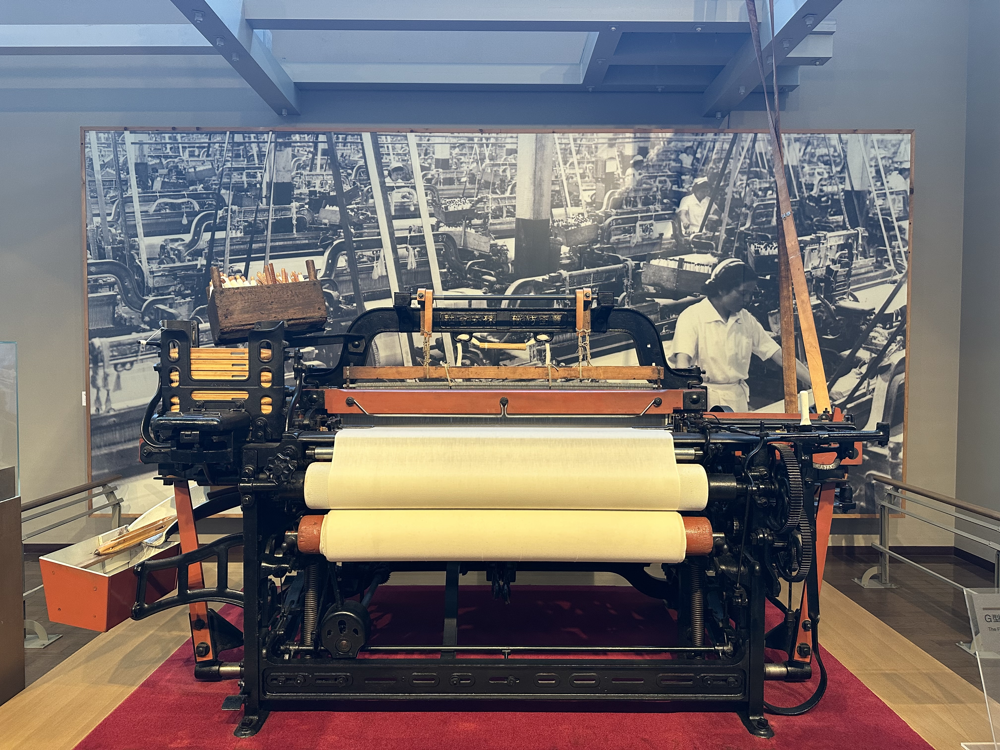
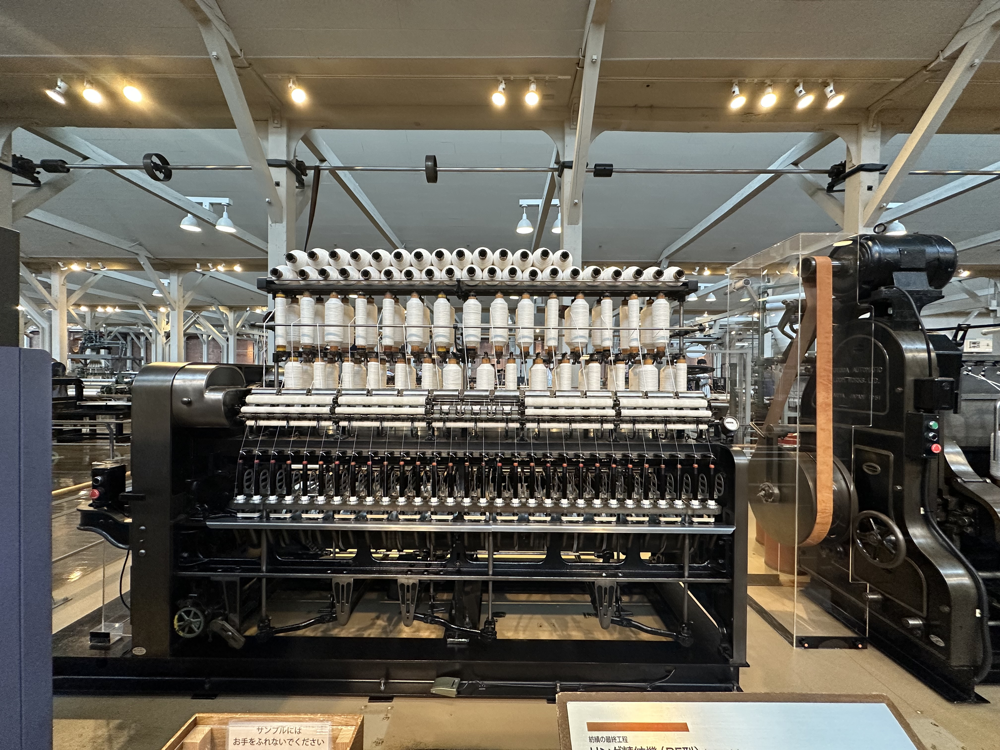
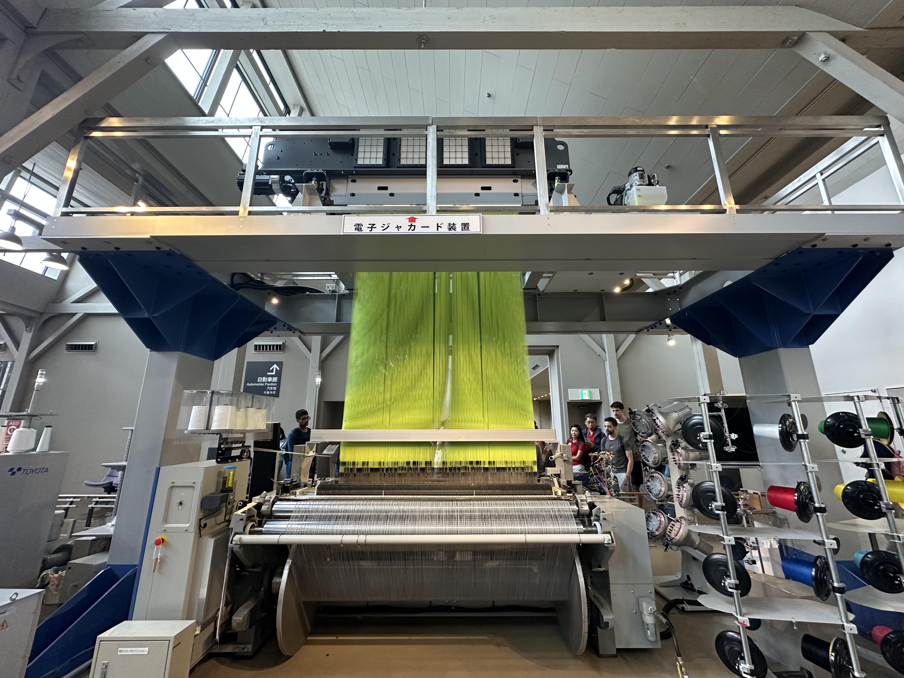

From Fiber to Technology: Understanding the Starting Point of Innovation
從纖維到技術：理解創新的起點
How a textile museum reveals the deeper logic behind automation and innovation

When you walk into the Toyota Commemorative Museum of Industry and Technology in Nagoya, you won’t see any cars on the first floor. Instead, you’ll find dozens of old textile machines. For most people, “Toyota” means automobiles and precision engineering, but this place reminds us that its origin was a textile company.
The exhibition begins with the nature of cotton. When you hold a bunch of cotton in one hand and gently pull with the other, the fibers partially straighten under tension. Because of friction and twist, they hook onto each other, forming a continuous strand. When that strand is twisted further, it becomes a thread. This simple physical process — hand spinning — is how early humans made cotton yarn long before machines existed. That small gesture was the original form of “spinning.”

Every spinning or weaving machine, ancient or modern, is based on this same principle. The exhibition progresses from hand-operated looms — wooden structures with simple rope transmissions powered by foot pedals — to water-driven looms that used steady water flow as energy. Then came the era of steam and electricity, where power sources became unified and structures increasingly metallic. Each improvement represented not just higher efficiency, but a deeper understanding of materials and energy.

At the center of the gallery stands a model of Toyota’s 1924 automatic loom. When a thread breaks, the machine automatically stops. This design is often seen as the origin of the concept of automation. It wasn’t about showing off technology — it solved a real production problem: reducing wasted fabric and inspection time. One worker could now operate twenty looms at once. This detail-driven engineering mindset later became the core of the Toyota Production System: “Let problems reveal themselves. Let processes correct themselves.”
The exhibition ultimately presents more than mechanical evolution — it shows a way of thinking. Each improvement arose from observing the real site: the fabric breaks easily? detect it; the power is unstable? change the source; efficiency drops? redesign the structure. This direct engagement with problems is what nourishes technological growth.
Placed in a broader context, the logic behind this history mirrors all forms of innovation: True progress rarely comes from a sudden “new idea,” but from long-term observation, trial, and correction.
From the fibers of cotton to today’s flow of information, we're still continuing the same way of thinking — to understand the essence of things, and to keep improving and redesigning them.
Leave a Comment
留言
Share your thoughts and join the discussion
分享您的想法並參與討論